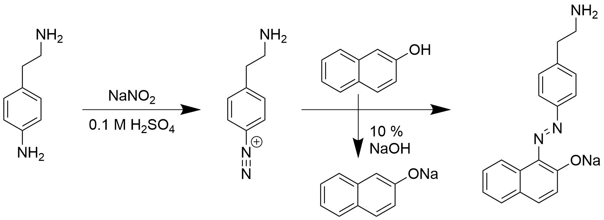

In the production of functionalised graphene it would be nice to assess that the diazonium compound is continously present. This was previously attempted using electrochemistry, but was not succesful due to very low concentrations.
Another possibility is to use the diazonium compound to make an azo-coupling with 2-Naphtol. This should produce a very colorful dye, which should be easy to measure concentration of using UV-Vis absorption spectroscopy.
knitr::include_graphics(path = "figs/azo-coupling.png")
library(tidyverse)
library(units)
V = set_units(10, mL) # Volume of 0.1 M H2SO4 to be used
C_diazo = set_units(2, mmol/L)
M_nitro = set_units(202.64, mg/mmol) # 4-Nitrophenethylamine hydrochloride
M_nitrite = set_units(69.00, mg/mmol) # NaNO2
M_naphtol = set_units(144.17, mg/mmol) # 2-Naphtol
n_nitro = V * C_diazo
n_nitrite = n_nitro * 1.5
n_naphtol = n_nitro * 1.5
m_nitro = n_nitro * M_nitro
m_nitrite = n_nitrite * M_nitrite
m_naphtol = n_naphtol * M_naphtol
C_dye = set_units(C_diazo * set_units(2, mL) / set_units(4, mL), mmol/L)Initially the diazonium compound is formed by mixing 10 mL 0.1 M H2SO4 with 4.0528 mg 4-Nitrophenethylamine hydrochloride (0.02 mmol) and 2.07 mg NaNO2 (0.03 mmol). This is stirred for 15 min. The 2-Naphtol solution is made by mixing 4.3251 mg 2-Napthol (0.03 mmol) in 2 mL 10 % sodium hydroxide and 8 mL water
2 mL of the diazonium-solution is then added to 2 mL of the 2-Naphtol solution. This should form an orange-red dye upon heating. The final concentration of the dye is 1 mmol/L.
The experiment was performed as described and upon mixing of the diazonium-compound and 2-Naphtol a red-orange solution formed immediately. This was heated using hot water for 5 min before measuring the absorption spectra.
UV-Vis absorption spectra were acquired between 200 and 800 nm. The data is first loaded into R.
path <- "data/raw_data/uvvis/20170915 Azodye/"
data170915 <- tibble(file = list.files(path = path, pattern = "*.csv")) %>%
mutate(data = map(paste0(path,file), read_delim, delim = ";", skip = 1)) %>%
mutate(name = stringr::str_extract(file, pattern = "^[\\sa-zA-Z0-9_-]*")) %>%
unnest() %>%
mutate(region = ifelse(nm > 400, "Visible", "UV"))We can plot each absorption spectrum. From this we can see that, as expected, all compounds adsorb light in the ultraviolet region, but it is only the synthesized azo-dye that has any significant adsorption in the visible range.
data170915 %>%
filter(name %in% c("2-Naphtol", "Azo-dye 1-0", "Diazo")) %>%
ggplot(aes(nm, A, color = name)) +
geom_line() +
facet_wrap(~region, ncol = 2, scales = "free")ggsave("figs/20170904_UVVis_compounds.png", width = 16, height = 6, units = "cm", dpi = 300)Data has also been obtained for a series of dilutions of the azo-dye to make a calibration curve. The numbers in the legend indicate the dilution factor (i.e 1 to 0, 1 to 2 etc.)
data170915 %>%
filter(stringr::str_detect(name, "^(Azo)")) %>%
mutate(name = forcats::fct_reorder(name, A, .desc = TRUE)) %>%
ggplot(aes(nm, A, color = name)) +
geom_line() +
facet_wrap(~region, ncol = 2, scales = "free")The peak at 499 nm is used to make a calibration curve and to calculate an extinction coefficient for the azo-dye.
data170915_cal <- data170915 %>%
filter(stringr::str_detect(name, "^(Azo)"), nm == 499) %>%
mutate(dilution = stringr::str_extract(name, "\\d-[\\d]+")) %>%
separate(dilution, c("start", "dilution"), convert = TRUE) %>%
mutate(C = start / (dilution+start))
# Fit a linear model to the data
fit170915 <- lm(A ~ C, data = data170915_cal)
new_C <- tibble(C = seq(0, 1, 0.1))
fitted170915 <- cbind(new_C, predict(fit170915, interval = "confidence", newdata = new_C))
data170915_cal %>%
ggplot() +
geom_point(aes(C, A)) +
geom_line(data = fitted170915, aes(C, fit)) +
geom_ribbon(data = fitted170915, aes(x = C, ymin = lwr, ymax = upr), alpha = 0.2) +
labs(title = "Absorption of azo-dye at 499 nm", x = "Concentration (mmol/L)", y = "Absorption (a.u.)")ggsave("figs/20170904_UVVis_dilution.png", width = 16, height = 4, units = "cm", dpi = 300)The absorption coefficient at 499 nm becomes 0.104 ± 0.005 mM-1 cm-1. Note that this is for the azo-dye, and the concentration of the diazonium is halved during the production of the dye. In reality, relative concentrations within a single experiment are probably most interesting.
Based on this experiment it should be possible to easily monitor the concentration of diazonium salt during exfoliation of graphite. 2 mL samples of the exfoliation solution can be extracted at regular intervals, filtered for graphite and then injected directly into a solution of sodium naphthalen-2-olate. From this the adsorption spectrum will directly tell to what degree the diazonium compound has degraded.